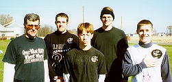
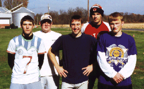

CORK BOWL 8 A THRILLER AS LEMURS WIN BY 16
Cork Bowl 8 was all it was built up to be, and in the end it was decided by just a few small breaks that happened to fall in favor of the Lemurs. In a highly competitive battle, the Lemurs pulled ahead in the third quarter of action and managed to hold off the visiting Sasquai to win 142-126. .."I'm so glad to get this win," commented this year's MVP Patrick Cork. "Last year was a tough loss to swallow, but we came back and fought through some tough situations to pull out the victory." Cork had a career day for the Lemurs finishing with a record-setting 24 receptions. Due to the illness of brother and teammate Chris, Patrick picked up the bulk of the offensive load. He made four key receptions on fourth downs during the game, all of which later resulted in scores. With quarterbacks Tony Cork and Willy Truitt leading their teams, each marched right down the field for quick scores early in the game. Truitt looked for his number one target, Kirby Newell, early for 2 quick touchdowns. Newell had a career day as well, matching Patrick Cork's reception total of 24, but in a much different style. Newell used his size and strength advantage over the Lemurs to take short, underneath passes and turn them into big gains. Cork, on the other hand, used several circus catches along the sidelines to keep drives alive and move the ball down the field. "Patrick was amazing," said quarterback and father Tony Cork. "I'd just throw the ball out there, and he'd go get it. He just kept diving for balls and I just kept thr

owing them out there." Patrick added about Newell, "He's tough to defend. He doesn't look that big, but he's a load to bring down. You just have to hope to get good enough defense on him that he can't make big plays after the catch."Lemurs pictured at the right are from left to right: (Tony Cork, Patrick Cork, Greg Howard, Chris Cork, and Josh Williamson)
With the game tied at 21 midway through the first quarter, Josh Williamson came up with the first game-altering play. Williamson shot into the backfield and sacked Willy Truitt for a safety to put the Lemurs up 23-21. "That was huge," remarked Patrick. "A safety in Cork Bowl is pretty much the same as a touchdown because it forces the other team to score an extra time since there are no field goals." The two teams traded touchdowns for the remainder of the half and the Lemurs went to the break leading 72-70. Patrick Cork had 13 receptions at halftime, and Chris Cork and Kirby Newell each had 4 touchdowns. For the first time ever in Cork Bowl, there were no interceptions or fumbles in the first half of action.
With the Lemurs leading 86-77 in the third quarter, and the Sasquai nearing the end zone, Williamson rushed into the backfield again and forced Truitt to hurry a 4th down pass that fell incomplete, turning the ball over to the Lemurs deep in their own territory. This ignited the sequence of events that changed the game for good in favor of the Lemurs. On the insuing possession, Patrick Cork scored his 4th touchdown of the game to increase the lead to 93-77. On the first play of a very critical drive for the Sasquai following the touchdown, Williamson once again put severe pressure on Truitt, sacking him and forcing a fumble. Patrick Cork fell on the ball in the endzone for another Lemur touchdown that stretched the lead to a seemingly insurmountable 100-77.

Sasquai pictured at left are from left to right: (Willy Truitt, Kevin Ryan, Reggie Truitt, Kirby Newell, and Ryan Tomlinson)
In the middle of the 3rd quarter, with the Sasquai in desperate need of a defensive stop, the Lemurs were faced with a critical 4th and long from their own 3 yard line. They opted to go after the first down, and Patrick Cork made what he considered to be his best catch of the day along the right sideline with a remarkable diving catch just past the first down marker. "I had just dropped a pass on the play before, so I wanted to redeem myself a little bit. We really needed to keep that drive going to run some time off the clock and to not let them get a quick score to get them back in the game." The play seemed to demoralize the Sasquai at the time, and the Lemurs scored on the next play with a Chris Cork touchdown catch. The game was far from over though. The Sasquai had several opportunities in the 4th quarter. With the team hopping on Newell's back, the Sasquai fought back behind the bruising running of Newell that forced the Lemurs to use two, sometimes three men to bring him down. However, a botched fourth-and-one play halted a promising drive after a holding penalty brought back a Newell touchdown. The Lemurs nearly lost their top receiver early in the 4th quarter when Patrick Cork went crashing into a pine tree going after a third down pass. On the next play, Newell picked off Tony Cork's pass and returned it for the touchdown, but it just wasn't enough to ignite a Sasquai comeback.
As noted, Patrick Cork (jersey at right) and Kirby Newell both broke the old reception mark - because geocities sucks horribly, the rest of the article simply disappeared one day and they don't know where it went. Sorry but I can't help it if they are idiots.